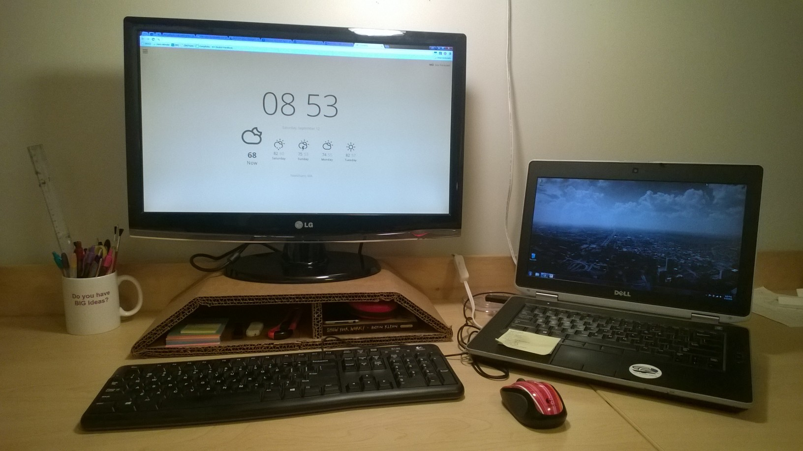
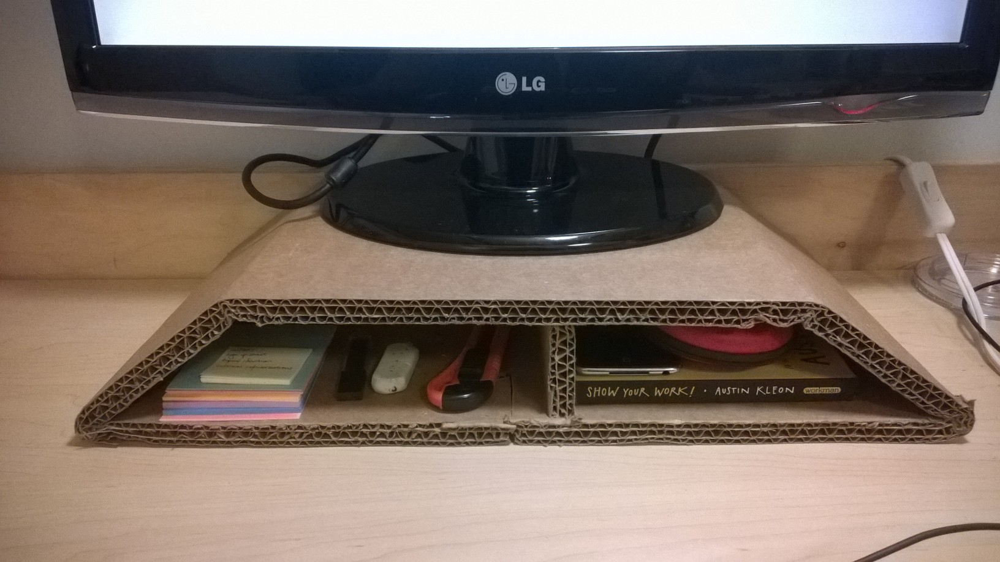
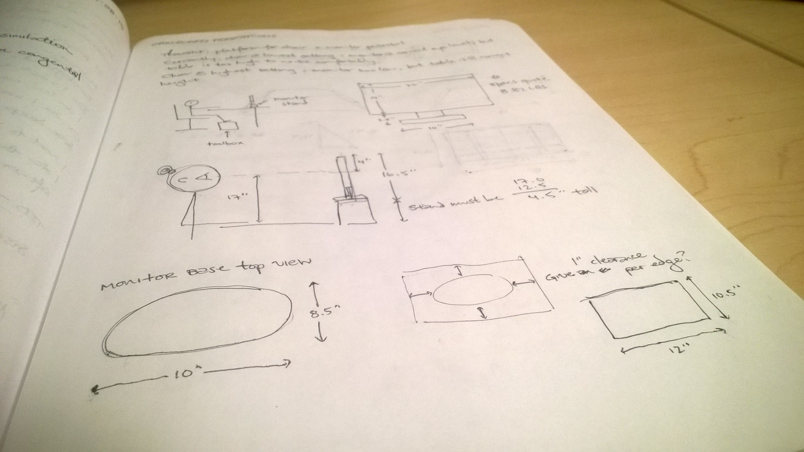
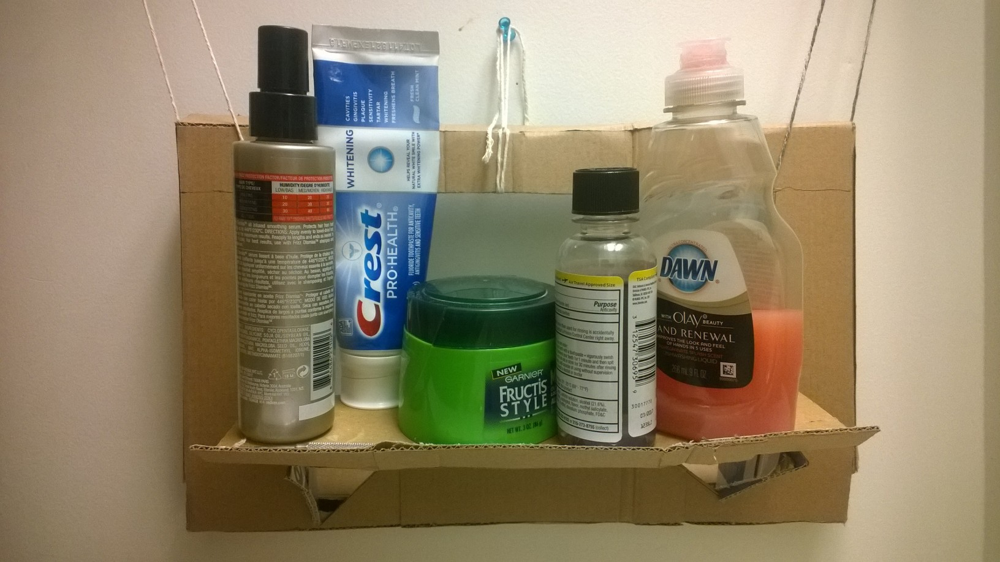
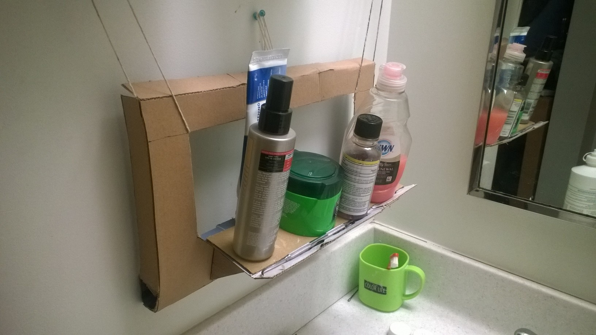
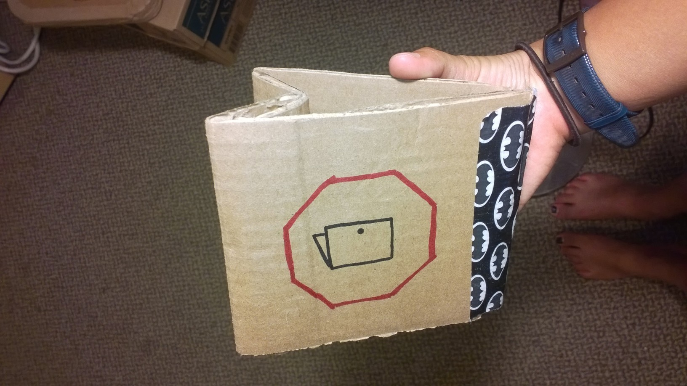

CARDBOARD CARPENTRY
Foraying into adaptive design, I enjoy crafting cardboard adaptations to enhance my life. Each piece is a study on intentional structural folds, woodworking joints*, and minimal cardboard use.
* Each of my pieces can be unfolded and flattened, making storage a breeze. Using glue and hardware would be antithetical to cardboard's impermanence and ease of assembly, so I don't.
Click to go directly to a project:
DESK AND STOOL
My largest cardboard structures to date, the desk and stool are customized for my petite frame. (Bad ergonomics was the source of my suffering one summer. I will now do anything in my power to prevent back pain.)
MONITOR STAND
I made a pedestal to raise my monitor to the proper viewing height, reducing neck strain.
The trapezoidal frame prevents racking. The crossbrace, a straightforward rectangular insert, prevents deflection caused by the monitor's weight and acts as natural a natural shelf divider.
Planning sketches pictured below.
[missing image] A close-up of the dovetail joint holding the trapezoid together.
TOILETRY SHELF
To reduce sink clutter, I made a toiletry shelf on the first day of junior year to hold The Roommate's and my various hair and dental care products. The shelf is suspended to a handrail with string.  
[missing image] A detailed view of the shelf's construction + rationale behind each fold.
SCONCES FOR SUSPENDED LIGHTBULBS
To add more lighting to the home, I built trusses to suspend light cords, both built in different ways. Both trusses have notches in the top corner, preventing the light cord from sliding off.
Both trusses are attached to the wall with command stips, and suspended with cord and a command hook.
[missing image] kitchen truss
This truss is connected with a dovetail joint. However, this led to deflection along that side of the truss, meaning more command strips.
[missing image] bedroom truss
To address the deflection, I did away with the dovetail joint. I cut notches in all the corners and used tensioned cord to hold everything together.
[missing image] detailed sketch of cord tensioning
TRASHCAN
I made a trashcan with a strip of scrap cardboard that measured 12" by 36".
[missing image] close-up of joints
DOOR STOP
This is one is admittedly more cutesy than the rest. The Roommate and I also cheated by using tape. We'll make a better one next year.
PROCEDURE . . .
... that I used for more readily bending tri-wall cardboard. (Note: It's incredibly difficult.) This procedure was developed after much trial and error.
- Mark location of fold.
- Place another sheet of cardboard along line.
- Using the back of a pen (or other blunt object, but the pen is already handy), score along the line by pressing very hard.
- Using body-weight as an anchor, slip fingers under the to-be-bent cardboard and lift forcefully.